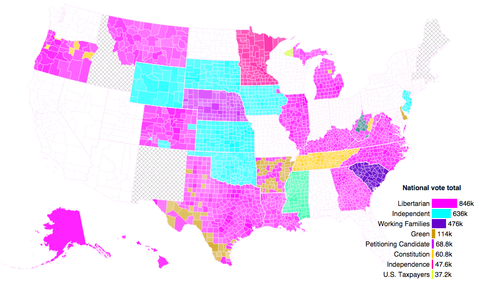

Nov 12, 2014 11:28 PM EST
If you eclipse the Sun, you see its corona: a wild aura of plasma loops, arcs, and jets, where gravity no longer holds sway. And so it is in American politics, where beneath the red and blue hides a polychrome menagerie.
The map below shows which party—and candidate—received the most votes in each county in last week's U.S. Senate election, excluding Democrats and Republicans. None of the candidates shown actually won. (Seats in which no third-party candidate received enough votes to register are crosshatched and marked vacant; states in which there was no race are left blank. Colors are randomized.)
The Libertarian Party—"for all who don't want to push other people around and don't want to be pushed around themselves"—received the third most votes nationally, collecting 846,000 of the 45 million total votes cast for Senate candidates. No Libertarian candidate received more than 4.3% of the vote. (That was Randall Batson in Kansas.)
Independent candidates are not affiliated with any political party. (Though voters hoping to declare similar autonomy are sometimes snared by the Independence Party.) Larry Pressler in South Dakota and Greg Orman in Kansas were two independents (best to use a lowercase "i") who made their Democrat and Republican opponents sweat a little—or at least made the election-season media frenzy more interesting.
The Green Party shows up prominently on the Mexican border, across Arkansas, and in Delaware, with local affiliates West Virginia Mountain Party and Oregon Pacific Green Party coming in right behind Democrats and Republicans in some counties.
The rhetoric of these minor party candidates is defiant. “Most laws are a form of violence,” reads Batson’s campaign website. In Delaware, Green Andrew Groff promised, “We will not be slaves to corporate political party manipulation.” Independent Curt Gottshall of Wyoming ran on a platform of returning “honor and integrity” to Washington.
The complete published platform of Bob Baber of the West Virginia Mountain Party is impressively concise: “Federally I am for a balanced budget, shared duty, and shared sacrifice. Environmentally I support transitioning, over time, from coal to alternative energy sources, primarily solar. (Updates and revisions forthcoming.)”
Graphic and text by Christopher Tucker and Dylan Yep
Originally published at Bloomberg Politics; text archived by Wayback Machine; static image of map archived on Twitter.